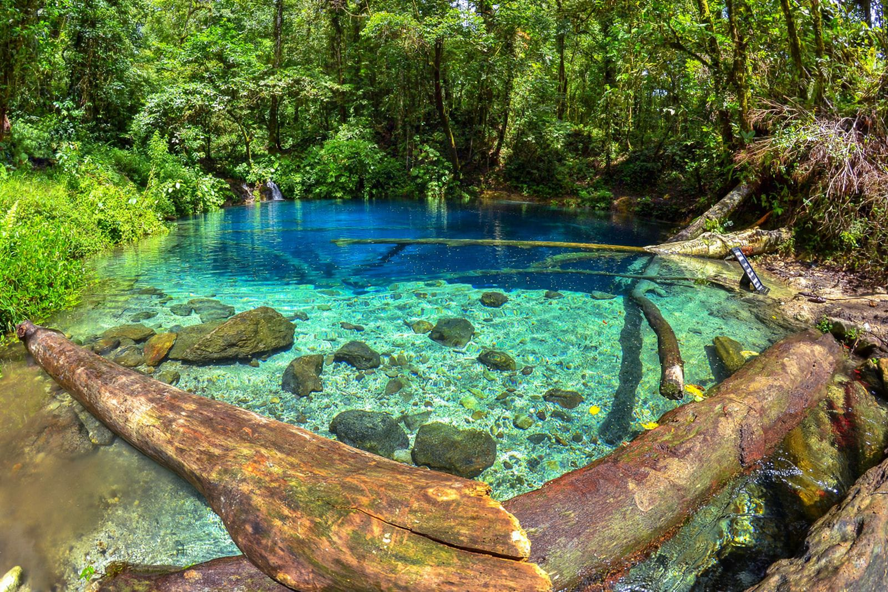

Mengapa Hidden Gem Sebaiknya Tetap Sedikit Tersembunyi
Ditulis oleh Tim Jalur Sunyi

Paradoks tempat tersembunyi
Begitu sebuah tempat diunggah ke media sosial, ia tidak lagi tersembunyi. Lonjakan pengunjung bisa membuat sampah menumpuk, warga kehilangan ketenangan, dan alam yang tadinya terjaga mulai rusak.
Tiga tanda sebuah tempat mulai kewalahan
- Jalur setapak melebar karena terlalu banyak diinjak.
- Warga mulai menutup akses karena merasa terganggu.
- Sampah plastik muncul di tempat yang dulu bersih.
Cara menjadi pengunjung yang baik
- Datang di hari biasa atau di luar musim liburan.
- Menginap dan makan di rumah warga agar uangmu berputar di desa.
- Tidak membagikan titik koordinat yang rawan ke ribuan orang, cukup ceritakan suasananya.
- Meminta izin sebelum memotret warga atau ritual.
Penutup
Hidden gem adalah titipan. Tugas kita bukan menjadi yang pertama sampai, melainkan memastikan orang setelah kita masih bisa merasakan hal yang sama.